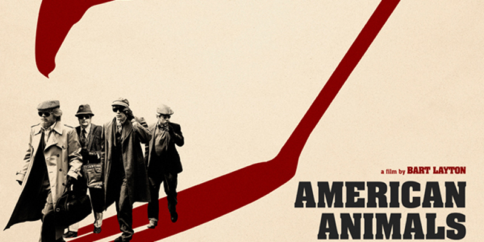
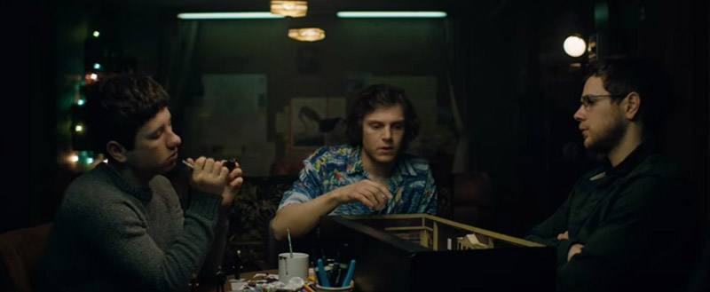

American Animals Review by Abhijith A G | A Bio-Pic Nareted by The Real People
Posted By : Abhijith A G | Date : 29-08-2018
Year :- 2018
Genre :- Drama / Crime Thriller
ട്രാൻസിൽവാനിയ യൂണിവേഴ്സിറ്റി വായനശാലയിൽ നിന്നും 2004ൽ നാലു ഫ്രണ്ട്സ് ചേർന്നു വിലപിടിപ്പുള്ള ബുക്കുകൾ മോഷ്ടിക്കുന്നു അത് ആസ്പദമാക്കി എടുത്ത സിനിമ ആണ് അമേരിക്കൻ അനിമൽസ്.

ഒരു ആർട്ട് സ്റ്റുഡന്റ് ആയ Spencerന്റെ ജീവിതം അവനു ബോറായി തോനുന്നു കൂടുതൽ രസകരമായ എന്തെങ്കിലും അതിപ്പോൾ ട്രാജഡിയാണെങ്കിലും സംഭവിക്കാൻ അവൻ അതിയായിആഗ്രഹിക്കുന്നു. സ്കൂളിൽ നിന്നു പോകുന്ന ടൂറിൽ ട്രാൻസിൽവാനിയ വായനശാലയിലെ വിലകുടിയതും അപൂർവവുമായ ആർട്ട് John James Audubon'sന്റെ "The Birds of America " എന്ന ബുക്ക് കാണുകയും അത് മോഷ്ടിക്കാൻ തന്റെ ഫ്രണ്ട് ആയ Warren രണ്ടുപേരുടെയും കളികൂട്ടുകാരായ Chas & Eric നെയും ചേർത്ത് പ്ലാൻ തയാറാക്കുന്നു.

Based on True Story ഇത്തരം സിനിമയിൽ സാധാരണമായി യഥാർഥ സംഭവം കാണിക്കുകയും ഒർജിനൽ ആളുകളെ അവസാനം ഏൻഡ് ക്രെഡിറ്റിൽ കാണിക്കും എന്നാൽ ഇവിടെ റിയൽ ആളുകൾ (നാല് കുട്ടുകാർ ) തന്നെയാണ് കഥ പറയുന്നത് സിനിമയുടെ കഥയോടൊപ്പം സിനിമയിലെ ആക്ടര്സ് പറയുന്ന dialoge ഇന്റെ ബാക്കി അല്ലെങ്കിൽ തുടർച്ച പറയുന്നത് റിയൽ ആളുകൾ ആണ്. സിനിമയിൽ യഥാർത്ഥ സംഭവുമായി ബന്ധപ്പെട്ട എല്ലാരും അവരുടെ അനുഭവം പറയുന്നുണ്ട്.റിയൽ ലൈഫിലെ ആളുകൾ അവരുടെ ഇമോഷൻ സിനിമയിൽ നന്നായി പ്രതിഫലിക്കുന്നുണ്ട്. യഥാർഥ സംഭവം ആസ്പദം ആക്കിയുള്ള ഒരുപാടു സിനിമകൾ നിങ്ങൾ കണ്ടിട്ടുണ്ടാവും എന്നാൽ അതിൽ നിന്നെല്ലാം വ്യത്യസ്തമായി ആണ് ഇതിന്റെ മേക്കിങ് തീർച്ചയായും കാണുക..!
My Rating : 3.5/5
Final Verdict: യഥാർഥ സംഭവം ആസ്പദം ആക്കിയുള്ള ഒരുപാടു സിനിമകൾ നിങ്ങൾ കണ്ടിട്ടുണ്ടാവും എന്നാൽ അതിൽ നിന്നെല്ലാം വ്യത്യസ്തമായി ആണ് ഇതിന്റെ മേക്കിങ് തീർച്ചയായും കാണുക..!
You can check everything tou wanna know about the movie from: American Animals